16.2 Mathematics of Waves
Learning Objectives
By the end of this section, you will be able to:
• Model a wave, moving with a constant wave velocity, with a mathematical expression
• Calculate the velocity and acceleration of the medium
• Show how the velocity of the medium differs from the wave velocity (propagation velocity)
In the previous section, we described periodic waves by their characteristics of wavelength, period, amplitude, and wave speed of the wave. Waves can also be described by the motion of the particles of the medium through which the waves move. The position of particles of the medium can be mathematically modeled as wave functions, which can be used to find the position, velocity, and acceleration of the particles of the medium of the wave at any time.
Pulses
A pulse can be described as wave consisting of a single
disturbance that moves through the medium with a constant amplitude. The pulse
moves as a pattern that maintains its shape as it propagates with a constant
wave speed. Because the wave speed is constant, the distance the pulse moves in
a time is equal to  (Figure
16.8).
(Figure
16.8).
|
|

Figure 16.8
The pulse at time  is centered on with amplitude A. The pulse moves as a
pattern with a constant shape, with a constant maximum value A. The
velocity is constant and the pulse moves a distance
is centered on with amplitude A. The pulse moves as a
pattern with a constant shape, with a constant maximum value A. The
velocity is constant and the pulse moves a distance  in a time
in a time  The distance traveled is measured with any
convenient point on the pulse. In this figure, the crest is used.
The distance traveled is measured with any
convenient point on the pulse. In this figure, the crest is used.
You can execute any Python code. Just enter something in the box below and click the button.
Modeling a One-Dimensional Sinusoidal Wave using a Wave Function
Consider
a string kept at a constant tension where one end is fixed and the free end is
oscillated between  and by a mechanical device at a constant
frequency. Figure
16.9
shows snapshots of the wave at an interval of an eighth of a period, beginning
after one period
and by a mechanical device at a constant
frequency. Figure
16.9
shows snapshots of the wave at an interval of an eighth of a period, beginning
after one period 
|
|
![Figure shows different stages of a transverse wave propagating towards the right, taken at intervals of 1 by 8 T. Dots mark points on the wave. These move up and down from – A to +A. A dot that is at the equilibrium position at time t=T, moves to +A at time t=T plus 2 by 8 T. It then moves back to the equilibrium position at time t= T plus 4 by 8 T. It moves to –A at time t=T plus 6 by 8 T and back to the equilibrium position at time t=2T. Similarly, all dots move to their original positions at time t=2T.](16-2-mathematics-of-waves.fld/image021.jpg)
Figure 16.9
Snapshots of a transverse wave moving through a string under tension,
beginning at time  and taken at intervals of
and taken at intervals of  Colored dots are used to highlight points on
the string. Points that are a wavelength apart in the x-direction are
highlighted with the same color dots.
Colored dots are used to highlight points on
the string. Points that are a wavelength apart in the x-direction are
highlighted with the same color dots.
Notice
that each select point on the string (marked by colored dots) oscillates up and
down in simple harmonic motion, between and  with a period T. The wave on the string
is sinusoidal and is translating in the positive x-direction as time
progresses.
with a period T. The wave on the string
is sinusoidal and is translating in the positive x-direction as time
progresses.
At
this point, it is useful to recall from your study of algebra that if f(x)
is some function, then  is the same function translated in the
positive x-direction by a distance d. The function is the same function translated in the
negative x-direction by a distance d. We want to define a wave
function that will give the y-position of each segment of the string for
every position x along the string for every time t.
is the same function translated in the
positive x-direction by a distance d. The function is the same function translated in the
negative x-direction by a distance d. We want to define a wave
function that will give the y-position of each segment of the string for
every position x along the string for every time t.
Looking
at the first snapshot in Figure
16.9,
the y-position of the string between and  can be modeled as a sine function. This wave
propagates down the string one wavelength in one period, as seen in the last
snapshot. The wave therefore moves with a constant wave speed of
can be modeled as a sine function. This wave
propagates down the string one wavelength in one period, as seen in the last
snapshot. The wave therefore moves with a constant wave speed of 
Recall
that a sine function is a function of the angle ,
oscillating between and ,
and repeating every  radians (Figure
16.10).
However, the y-position of the medium, or the wave function, oscillates
between
radians (Figure
16.10).
However, the y-position of the medium, or the wave function, oscillates
between  and
and  ,
and repeats every wavelength
,
and repeats every wavelength  .
.
|
|

Figure 16.10
A sine function oscillates between and every  radians.
radians.
To construct our model of the wave using a periodic function, consider the ratio of the angle and the position,
Using and multiplying the sine function by the amplitude A, we can now model the y-position of the string as a function of the position x:
The wave on the string travels in the positive x-direction with a constant velocity v, and moves a distance vt in a time t. The wave function can now be defined by
It
is often convenient to rewrite this wave function in a more compact form.
Multiplying through by the ratio  leads to the equation
leads to the equation
The
value  is defined as the wave
number. The symbol for the wave number is k and has units of inverse
meters,
is defined as the wave
number. The symbol for the wave number is k and has units of inverse
meters,
16.2
Recall from Oscillations that the angular frequency is defined as The second term of the wave function becomes
The wave function for a simple harmonic wave on a string reduces to
where
A is the amplitude,  is the wave number,
is the wave number,  is the angular frequency, the minus sign is
for waves moving in the positive x-direction, and the plus sign is for
waves moving in the negative x-direction. The velocity of the wave is
equal to
is the angular frequency, the minus sign is
for waves moving in the positive x-direction, and the plus sign is for
waves moving in the negative x-direction. The velocity of the wave is
equal to
16.3
Think
back to our discussion of a mass on a spring, when the position of the mass was
modeled as  The angle
The angle  is a phase shift, added to allow for the fact
that the mass may have initial conditions other than
is a phase shift, added to allow for the fact
that the mass may have initial conditions other than  and
and  For similar reasons, the initial phase is
added to the wave function. The wave function modeling a sinusoidal wave,
allowing for an initial phase shift is
For similar reasons, the initial phase is
added to the wave function. The wave function modeling a sinusoidal wave,
allowing for an initial phase shift is
16.4
The value
16.5
is
known as the phase of the wave, where  is the initial phase of the wave function.
Whether the temporal term
is the initial phase of the wave function.
Whether the temporal term  is negative or positive depends on the
direction of the wave. First consider the minus sign for a wave with an initial
phase equal to zero The phase of the wave would be
is negative or positive depends on the
direction of the wave. First consider the minus sign for a wave with an initial
phase equal to zero The phase of the wave would be  Consider following a point on a wave, such as
a crest. A crest will occur when
Consider following a point on a wave, such as
a crest. A crest will occur when  ,
that is, when for any integral value of n. For
instance, one particular crest occurs at As the wave moves, time increases and x
must also increase to keep the phase equal to Therefore, the minus sign is for a wave moving
in the positive x-direction. Using the plus sign, As time increases, x must decrease to
keep the phase equal to The plus sign is used for waves moving in the
negative x-direction. In summary,
,
that is, when for any integral value of n. For
instance, one particular crest occurs at As the wave moves, time increases and x
must also increase to keep the phase equal to Therefore, the minus sign is for a wave moving
in the positive x-direction. Using the plus sign, As time increases, x must decrease to
keep the phase equal to The plus sign is used for waves moving in the
negative x-direction. In summary,  models a wave moving in the positive x-direction
and models a wave moving in the negative x-direction.
models a wave moving in the positive x-direction
and models a wave moving in the negative x-direction.
Equation
16.4
is known as a simple harmonic wave function. A wave function is any function
such that  Later in this chapter, we will see that it is
a solution to the linear wave equation. Note that
Later in this chapter, we will see that it is
a solution to the linear wave equation. Note that  works equally well because it corresponds to a
different phase shift
works equally well because it corresponds to a
different phase shift 
Finding the Characteristics of a Sinusoidal Wave
1. To find the amplitude, wavelength, period, and frequency of a sinusoidal wave, write down the wave function in the form
2. The amplitude can be read straight from the equation and is equal to A.
3.
The period of the wave can be derived from the
angular frequency 
4.
The frequency can be found using 
5.
The wavelength can be found using the wave
number 
Characteristics of a Traveling Wave on a String
A transverse wave on a taut string is modeled with the wave function
Find the amplitude, wavelength, period, and speed of the wave.
Strategy
All these characteristics of the wave can be found from the constants included in the equation or from simple combinations of these constants.
Solution
1. The amplitude, wave number, and angular frequency can be read directly from the wave equation:
2. The wave number can be used to find the wavelength:

3. The period of the wave can be found using the angular frequency:
4.
The speed of the wave can be found using the
wave number and the angular frequency. The direction of the wave can be
determined by considering the sign of  : A negative sign suggests that the
wave is moving in the positive x-direction:
: A negative sign suggests that the
wave is moving in the positive x-direction:
Significance
All of the characteristics of the wave are contained in the wave
function. Note that the wave speed is the speed of the wave in the direction
parallel to the motion of the wave. Plotting the height of the medium y
versus the position x for two times  and can provide a graphical
visualization of the wave (Figure 16.11).
and can provide a graphical
visualization of the wave (Figure 16.11).
|
|

Figure 16.11 A graph of height of the wave y as a
function of position x for snapshots of the wave at two times. The
dotted line represents the wave at time  and the solid line
represents the wave at 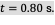 Since the wave velocity is
constant, the distance the wave travels is the wave velocity times the time
interval. The black dots indicate the points used to measure the displacement
of the wave. The medium moves up and down, whereas the wave moves to the right.
and the solid line
represents the wave at 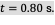 Since the wave velocity is
constant, the distance the wave travels is the wave velocity times the time
interval. The black dots indicate the points used to measure the displacement
of the wave. The medium moves up and down, whereas the wave moves to the right.
There is a second velocity to the motion. In this example, the wave
is transverse, moving horizontally as the medium oscillates up and down
perpendicular to the direction of motion. The graph in Figure 16.12 shows the motion of the medium at point  as a function of time.
Notice that the medium of the wave oscillates up and down between
as a function of time.
Notice that the medium of the wave oscillates up and down between  and 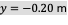 every period of 4.0 seconds.
and 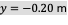 every period of 4.0 seconds.
|
|

Figure 16.12 A graph of height of the wave y as a
function of time t for the position  The medium oscillates
between
The medium oscillates
between  and every period. The period
represented picks two convenient points in the oscillations to measure the
period. The period can be measured between any two adjacent points with the
same amplitude and the same velocity,
and every period. The period
represented picks two convenient points in the oscillations to measure the
period. The period can be measured between any two adjacent points with the
same amplitude and the same velocity,  The velocity can be found by
looking at the slope tangent to the point on a y-versus-t plot.
Notice that at times 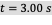 and
The velocity can be found by
looking at the slope tangent to the point on a y-versus-t plot.
Notice that at times 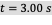 and  the heights and the
velocities are the same and the period of the oscillation is 4.00 s.
the heights and the
velocities are the same and the period of the oscillation is 4.00 s.
The wave function above is derived using a sine function. Can a cosine function be used instead?
Velocity and Acceleration of the Medium
As seen in Example 16.4, the wave speed is constant and represents the speed of the wave as it propagates through the medium, not the speed of the particles that make up the medium. The particles of the medium oscillate around an equilibrium position as the wave propagates through the medium. In the case of the transverse wave propagating in the x-direction, the particles oscillate up and down in the y-direction, perpendicular to the motion of the wave. The velocity of the particles of the medium is not constant, which means there is an acceleration. The velocity of the medium, which is perpendicular to the wave velocity in a transverse wave, can be found by taking the partial derivative of the position equation with respect to time. The partial derivative is found by taking the derivative of the function, treating all variables as constants, except for the variable in question. In the case of the partial derivative with respect to time t, the position x is treated as a constant. Although this may sound strange if you haven’t seen it before, the object of this exercise is to find the transverse velocity at a point, so in this sense, the x-position is not changing. We have
The magnitude of the maximum velocity of the medium is . This may look familiar from the Oscillations and a mass on a spring.
We can find the acceleration of the medium by taking the partial derivative of the velocity equation with respect to time,

The
magnitude of the maximum acceleration is  The particles of the medium, or the mass
elements, oscillate in simple harmonic motion for a mechanical wave.
The particles of the medium, or the mass
elements, oscillate in simple harmonic motion for a mechanical wave.
The Linear Wave Equation
We have just determined the velocity of the medium at a position x by taking the partial derivative, with respect to time, of the position y. For a transverse wave, this velocity is perpendicular to the direction of propagation of the wave. We found the acceleration by taking the partial derivative, with respect to time, of the velocity, which is the second time derivative of the position:
Now consider the partial derivatives with respect to the other variable, the position x, holding the time constant. The first derivative is the slope of the wave at a point x at a time t,
The second partial derivative expresses how the slope of the wave changes with respect to position—in other words, the curvature of the wave, where
The ratio of the acceleration and the curvature leads to a very important relationship in physics known as the linear wave equation. Taking the ratio and using the equation yields the linear wave equation (also known simply as the wave equation or the equation of a vibrating string),

16.6
Equation 16.6 is the linear wave equation, which is one of the most important equations in physics and engineering. We derived it here for a transverse wave, but it is equally important when investigating longitudinal waves. This relationship was also derived using a sinusoidal wave, but it successfully describes any wave or pulse that has the form These waves result due to a linear restoring force of the medium—thus, the name linear wave equation. Any wave function that satisfies this equation is a linear wave function.
An
interesting aspect of the linear wave equation is that if two wave functions
are individually solutions to the linear wave equation, then the sum of the two
linear wave functions is also a solution to the wave equation. Consider two
transverse waves that propagate along the x-axis, occupying the same
medium. Assume that the individual waves can be modeled with the wave functions
and  which are solutions to the linear wave
equations and are therefore linear wave functions. The sum of the wave
functions is the wave function
which are solutions to the linear wave
equations and are therefore linear wave functions. The sum of the wave
functions is the wave function
Consider the linear wave equation:
This has shown that if two linear wave functions are added algebraically, the resulting wave function is also linear. This wave function models the displacement of the medium of the resulting wave at each position along the x-axis. If two linear waves occupy the same medium, they are said to interfere. If these waves can be modeled with a linear wave function, these wave functions add to form the wave equation of the wave resulting from the interference of the individual waves. The displacement of the medium at every point of the resulting wave is the algebraic sum of the displacements due to the individual waves.
Taking
this analysis a step further, if wave functions and  are solutions to the linear wave equation,
then
are solutions to the linear wave equation,
then  where A and B are constants, is
also a solution to the linear wave equation. This property is known as the principle of superposition. Interference and superposition
are covered in more detail in Interference
of Waves.
where A and B are constants, is
also a solution to the linear wave equation. This property is known as the principle of superposition. Interference and superposition
are covered in more detail in Interference
of Waves.
Interference of Waves on a String
Consider a very long string held taut by two students, one on each
end. Student A oscillates the end of the string producing a wave modeled with
the wave function 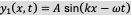 and student B oscillates the
string producing at twice the frequency, moving in the opposite direction. Both
waves move at the same speed  The two waves interfere to
form a resulting wave whose wave function is
The two waves interfere to
form a resulting wave whose wave function is  Find the velocity of the
resulting wave using the linear wave equation 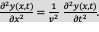
Find the velocity of the
resulting wave using the linear wave equation 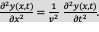
Strategy
First, write the wave function for the wave created by the second student. Note that the angular frequency of the second wave is twice the frequency of the first wave 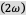, and since the velocity of the two waves are the same, the wave number of the second wave is twice that of the first wave 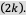 Next, write the wave equation for the resulting wave function, which is the sum of the two individual wave functions. Then find the second partial derivative with respect to position and the second partial derivative with respect to time. Use the linear wave equation to find the velocity of the resulting wave.
Solution
1.
Write the wave function of the second wave: 
2. Write the resulting wave function:
3. Find the partial derivatives:
4.
Use
the wave equation to find the velocity of the resulting wave:

Significance
The speed of the resulting wave is equal to the speed of the original waves 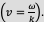 We will show in the next section that the speed of a simple harmonic wave on a string depends on the tension in the string and the mass per length of the string. For this reason, it is not surprising that the component waves as well as the resultant wave all travel at the same speed.
The wave equation 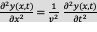 works for any wave of the
form  In the previous section, we
stated that a cosine function could also be used to model a simple harmonic
mechanical wave. Check if the wave
In the previous section, we
stated that a cosine function could also be used to model a simple harmonic
mechanical wave. Check if the wave
is a solution to the wave equation.
Any disturbance that complies with the wave equation can propagate as a wave moving along the x-axis with a wave speed v. It works equally well for waves on a string, sound waves, and electromagnetic waves. This equation is extremely useful. For example, it can be used to show that electromagnetic waves move at the speed of light.